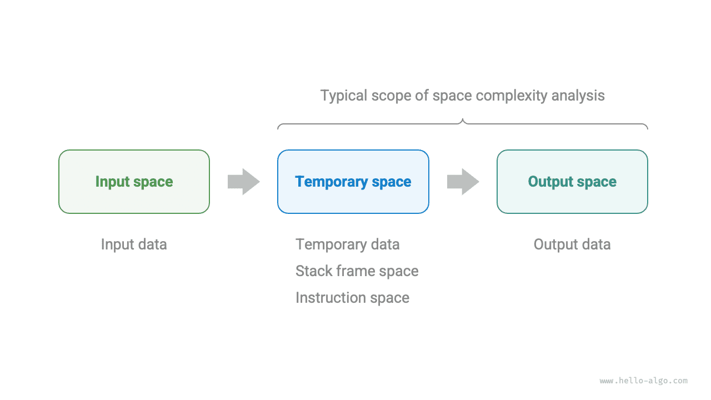
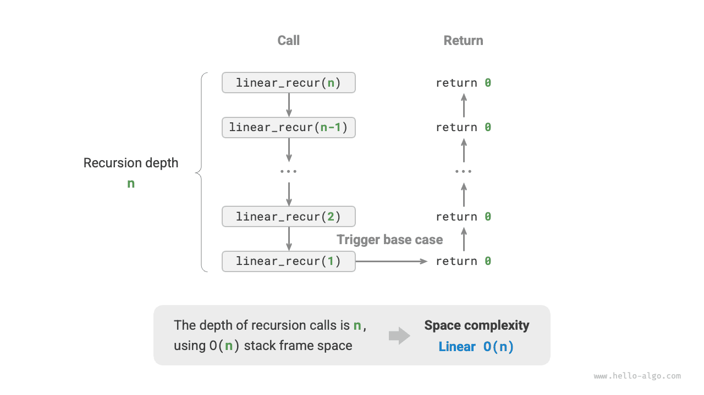
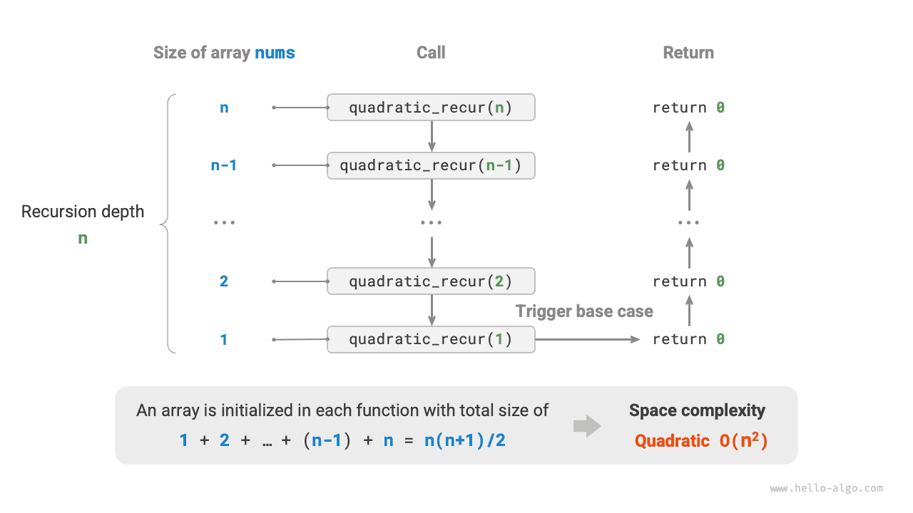
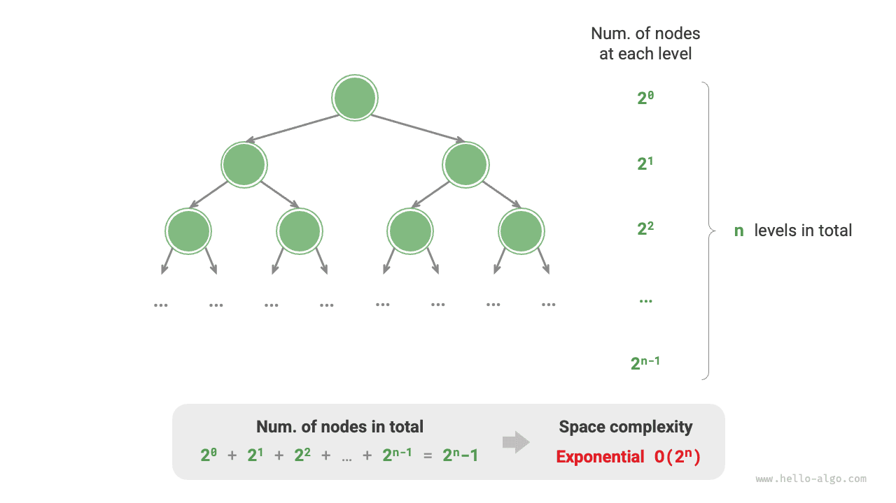

تحليل التعقيد
التعقيد المكاني
التعقيد المكاني (space complexity) يقيس اتجاه نمو مساحة الذاكرة التي تشغلها خوارزمية مع تزايد حجم البيانات. وهذا المفهوم يشبه كثيراً التعقيد الزمني، إلا أنه يستبدل «زمن التشغيل» بـ«مساحة الذاكرة المشغولة».
المساحة المرتبطة بالخوارزمية
تشمل مساحة الذاكرة التي تستخدمها الخوارزمية أثناء تنفيذها الأنواع التالية أساساً.
- مساحة الإدخال: تُستخدم لتخزين بيانات الإدخال الخاصة بالخوارزمية.
- المساحة المؤقتة: تُستخدم لتخزين المتغيرات والكائنات وسياقات الدوال وغيرها من البيانات أثناء تنفيذ الخوارزمية.
- مساحة الإخراج: تُستخدم لتخزين بيانات الإخراج الخاصة بالخوارزمية.
وبشكل عام، يشمل نطاق إحصاء التعقيد المكاني «المساحة المؤقتة» مضافاً إليها «مساحة الإخراج».
ويمكن تقسيم المساحة المؤقتة كذلك إلى ثلاثة أجزاء.
- بيانات مؤقتة: تُستخدم لحفظ الثوابت والمتغيرات والكائنات المتنوعة أثناء تنفيذ الخوارزمية.
- مساحة إطار المكدس: تُستخدم لحفظ بيانات سياق الدوال المستدعاة. وينشئ النظام إطار مكدس في قمة المكدس في كل مرة تُستدعى فيها دالة، وتُحرَّر مساحة الإطار بعد عودة الدالة.
- مساحة التعليمات: تُستخدم لحفظ تعليمات البرنامج المترجمة، ويُتجاهلها عادةً في الإحصاء الفعلي.
عند تحليل التعقيد المكاني لبرنامج ما، نأخذ عادةً ثلاثة أجزاء في الاعتبار: البيانات المؤقتة، ومساحة إطار المكدس، وبيانات الإخراج، كما يوضح الشكل التالي.

والشيفرة ذات الصلة كما يلي:
Go
/* البنية */
type node struct {
val int
next *node
}
/* إنشاء بنية عقدة */
func newNode(val int) *node {
return &node{val: val}
}
/* دالة */
func function() int {
// نفّذ بعض العمليات...
return 0
}
func algorithm(n int) int { // بيانات الإدخال
const a = 0 // بيانات مؤقتة (ثابت)
b := 0 // بيانات مؤقتة (متغير)
newNode(0) // بيانات مؤقتة (كائن)
c := function() // مساحة إطار المكدس (استدعاء دالة)
return a + b + c // بيانات الإخراج
}
TypeScript
/* صنف */
class Node {
val: number;
next: Node | null;
constructor(val?: number) {
this.val = val === undefined ? 0 : val; // قيمة العقدة
this.next = null; // مرجع إلى العقدة التالية
}
}
/* دالة */
function constFunc(): number {
// نفّذ بعض العمليات
return 0;
}
function algorithm(n: number): number { // بيانات الإدخال
const a = 0; // بيانات مؤقتة (ثابت)
let b = 0; // بيانات مؤقتة (متغير)
const node = new Node(0); // بيانات مؤقتة (كائن)
const c = constFunc(); // مساحة إطار المكدس (استدعاء دالة)
return a + b + c; // بيانات الإخراج
}
طريقة الحساب
طريقة حساب التعقيد المكاني مماثلة تقريباً لطريقة حساب التعقيد الزمني، إلا أن ما نقيسه يتغير من «عدد العمليات» إلى «مقدار المساحة المستخدمة».
وعلى عكس التعقيد الزمني، نهتم عادةً بالتعقيد المكاني في أسوأ حالة فقط. ويرجع ذلك إلى أن مساحة الذاكرة متطلب صارم، إذ يجب علينا ضمان حجز مساحة ذاكرة كافية لجميع بيانات الإدخال.
تأمل الشيفرة التالية. هنا، لـ«أسوأ حالة» في التعقيد المكاني في أسوأ حالة معنيان اثنان.
- بناءً على أسوأ بيانات الإدخال: عندما $n < 10$، يكون التعقيد المكاني $O(1)$؛ لكن عندما $n > 10$، تشغل المصفوفة المهيّأة
numsمساحة $O(n)$، لذا يكون التعقيد المكاني في أسوأ حالة $O(n)$. - بناءً على ذروة الذاكرة أثناء تنفيذ الخوارزمية: فمثلاً، قبل تنفيذ السطر الأخير، يشغل البرنامج مساحة $O(1)$؛ وعند تهيئة المصفوفة
nums، يشغل البرنامج مساحة $O(n)$، لذا يكون التعقيد المكاني في أسوأ حالة $O(n)$.
Go
func algorithm(n int) {
a := 0 // O(1)
b := make([]int, 10000) // O(1)
var nums []int
if n > 10 {
nums := make([]int, n) // O(n)
}
fmt.Println(a, b, nums)
}
TypeScript
function algorithm(n: number): void {
const a = 0; // O(1)
const b = new Array(10000); // O(1)
if (n > 10) {
const nums = new Array(n); // O(n)
}
}
وفي الدوال التعاودية، يلزم إحصاء مساحة إطار المكدس. تأمل الشيفرة التالية:
Go
func function() int {
// نفّذ بعض العمليات
return 0
}
/* يبلغ التعقيد المكاني للحلقة O(1) */
func loop(n int) {
for i := 0; i < n; i++ {
function()
}
}
/* يبلغ التعقيد المكاني للتعاود O(n) */
func recur(n int) {
if n == 1 {
return
}
recur(n - 1)
}
TypeScript
function constFunc(): number {
// نفّذ بعض العمليات
return 0;
}
/* يبلغ التعقيد المكاني للحلقة O(1) */
function loop(n: number): void {
for (let i = 0; i < n; i++) {
constFunc();
}
}
/* يبلغ التعقيد المكاني للتعاود O(n) */
function recur(n: number): void {
if (n === 1) return;
return recur(n - 1);
}
التعقيد الزمني لكل من الدالتين loop() وrecur() هو $O(n)$، لكن التعقيد المكاني لكل منهما مختلف.
- تستدعي الدالة
loop()الدالةfunction()عدد $n$ من المرات في حلقة. وفي كل تكرار، تعودfunction()وتحرّر مساحة إطار مكدسها، لذا يبقى التعقيد المكاني $O(1)$. - في الدالة التعاودية
recur()، توجد $n$ من نسخrecur()غير العائدة في الوقت نفسه أثناء التنفيذ، لذا تشغل مساحة إطارات مكدس $O(n)$.
الأنواع الشائعة
ليكن حجم بيانات الإدخال $n$. يوضح الشكل التالي الأنواع الشائعة للتعقيد المكاني (مرتبة من الأدنى إلى الأعلى).
$$ \begin{aligned} & O(1) < O(\log n) < O(n) < O(n^2) < O(2^n) \newline & \text{Constant} < \text{Logarithmic} < \text{Linear} < \text{Quadratic} < \text{Exponential} \end{aligned} $$

الترتيب الثابت $O(1)$
الترتيب الثابت شائع في الثوابت والمتغيرات والكائنات التي لا يعتمد عددها على حجم بيانات الإدخال $n$.
ويجدر التنبيه إلى أن الذاكرة التي تشغلها تهيئة المتغيرات أو استدعاء الدوال داخل حلقة تُحرَّر عند الانتقال إلى التكرار التالي، لذا لا تتراكم المساحة، ويبقى التعقيد المكاني $O(1)$:
TypeScript
/* الترتيب الثابت */
function constant(n: number): void {
// تشغل الثوابت والمتغيرات والكائنات مساحة O(1)
const a = 0;
const b = 0;
const nums = new Array(10000);
const node = new ListNode(0);
// تشغل المتغيرات في الحلقة مساحة O(1)
for (let i = 0; i < n; i++) {
const c = 0;
}
// تشغل الدوال في الحلقة مساحة O(1)
for (let i = 0; i < n; i++) {
constFunc();
}
}
الترتيب الخطي $O(n)$
الترتيب الخطي شائع في المصفوفات والقوائم المترابطة والمكدسات والطوابير وغيرها، حيث يتناسب عدد العناصر مع $n$:
TypeScript
/* الترتيب الخطي */
function linear(n: number): void {
// مصفوفة طولها n تشغل مساحة O(n)
const nums = new Array(n);
// قائمة طولها n تشغل مساحة O(n)
const nodes: ListNode[] = [];
for (let i = 0; i < n; i++) {
nodes.push(new ListNode(i));
}
// جدول تجزئة طوله n يشغل مساحة O(n)
const map = new Map();
for (let i = 0; i < n; i++) {
map.set(i, i.toString());
}
}
وكما يوضح الشكل التالي، فإن عمق التعاود لهذه الدالة هو $n$، أي أن هناك $n$ من دوال linear_recur() غير العائدة موجودة في الوقت نفسه، وتستخدم مساحة إطارات مكدس $O(n)$:
TypeScript
/* الترتيب الخطي (تنفيذ تعاودي) */
function linearRecur(n: number): void {
console.log(`Recursion n = ${n}`);
if (n === 1) return;
linearRecur(n - 1);
}

الترتيب التربيعي $O(n^2)$
الترتيب التربيعي شائع في المصفوفات والرسوم البيانية، حيث يرتبط عدد العناصر بـ$n$ ارتباطاً تربيعياً:
TypeScript
/* الترتيب الأسي */
function quadratic(n: number): void {
// تشغل المصفوفة مساحة O(n^2)
const numMatrix = Array(n)
.fill(null)
.map(() => Array(n).fill(null));
// تشغل القائمة ثنائية الأبعاد مساحة O(n^2)
const numList = [];
for (let i = 0; i < n; i++) {
const tmp = [];
for (let j = 0; j < n; j++) {
tmp.push(0);
}
numList.push(tmp);
}
}
وكما يوضح الشكل التالي، فإن عمق التعاود لهذه الدالة هو $n$، وتُهيَّأ مصفوفة في كل دالة تعاودية بأطوال $n$ و$n-1$ و$\dots$ و$2$ و$1$، بمتوسط طول $n / 2$، وبذلك تشغل في الإجمال مساحة $O(n^2)$:
TypeScript
/* الترتيب التربيعي (تنفيذ تعاودي) */
function quadraticRecur(n: number): number {
if (n <= 0) return 0;
const nums = new Array(n);
console.log(`In recursion n = ${n}, nums length = ${nums.length}`);
return quadraticRecur(n - 1);
}

الترتيب الأسي $O(2^n)$
الترتيب الأسي شائع في الأشجار الثنائية. تأمل الشكل التالي: شجرة ثنائية كاملة ذات $n$ من المستويات تضم $2^n - 1$ عقدة، وتشغل مساحة $O(2^n)$:
Go
/* شيفرة التشغيل */
func buildTree(n int) *TreeNode {
if n == 0 {
return nil
}
root := NewTreeNode(0)
root.Left = buildTree(n - 1)
root.Right = buildTree(n - 1)
return root
}
TypeScript
/* شيفرة التشغيل */
function buildTree(n: number): TreeNode | null {
if (n === 0) return null;
const root = new TreeNode(0);
root.left = buildTree(n - 1);
root.right = buildTree(n - 1);
return root;
}

الترتيب اللوغاريتمي $O(\log n)$
الترتيب اللوغاريتمي شائع في خوارزميات التقسيم والتغلب. فمثلاً، في الترتيب بالدمج: بمعطى مصفوفة إدخال طولها $n$، يقسم كل تعاود المصفوفة إلى نصفين من نقطة المنتصف، مكوّناً شجرة تعاود ارتفاعها $\log n$، وتستخدم مساحة إطارات مكدس $O(\log n)$.
ومثال آخر هو تحويل عدد إلى نص. فبمعطى عدد صحيح موجب $n$، يكون له $\lfloor \log_{10} n \rfloor + 1$ من الخانات، أي أن طول النص المقابل هو $\lfloor \log_{10} n \rfloor + 1$، لذا يكون التعقيد المكاني $O(\log_{10} n + 1) = O(\log n)$.
المقايضة بين الزمن والمساحة
من الناحية المثالية، نأمل أن يصل التعقيد الزمني والتعقيد المكاني للخوارزمية كليهما إلى المستوى الأمثل. غير أنه من الصعب عملياً عادةً تحسين التعقيدين الزمني والمكاني في الوقت نفسه.
عادةً ما يأتي تقليل التعقيد الزمني على حساب زيادة التعقيد المكاني، والعكس صحيح. ويُسمى التضحية بمساحة الذاكرة مقابل تحسين سرعة التنفيذ «مقايضة المساحة بالزمن»؛ ويُسمى العكس «مقايضة الزمن بالمساحة».
ويعتمد اختيار أي من النهجين على الجانب الذي نوليه أهمية أكبر. وفي معظم الحالات، يكون الزمن أثمن من المساحة، لذا تكون «مقايضة المساحة بالزمن» هي الاستراتيجية الأكثر شيوعاً عادةً. وبالطبع، عندما يكون حجم البيانات ضخماً جداً، يكون التحكم في التعقيد المكاني مهماً أيضاً.